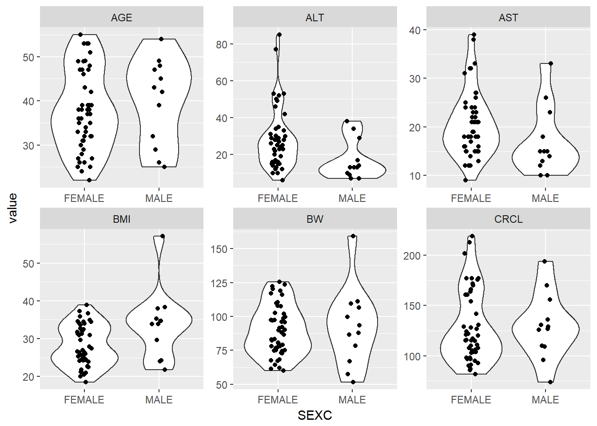

4 Tidying Data
library(knitr)
library(tidyverse)
#> Loading tidyverse: ggplot2
#> Loading tidyverse: tibble
#> Loading tidyverse: tidyr
#> Loading tidyverse: readr
#> Loading tidyverse: purrr
#> Loading tidyverse: dplyr
#> Conflicts with tidy packages ----------------------------------------------
#> filter(): dplyr, stats
#> lag(): dplyr, stats
library(PKPDmisc)ebe_cov <- read_csv("../data/ebe_cov.csv")
#> Parsed with column specification:
#> cols(
#> ID = col_integer(),
#> ETA1 = col_double(),
#> ETA2 = col_double(),
#> ETA3 = col_integer(),
#> ETA4 = col_double(),
#> ETA5 = col_double(),
#> ETA6 = col_double(),
#> ETA7 = col_double(),
#> ETA8 = col_double(),
#> ETA9 = col_double(),
#> BW = col_double(),
#> BMI = col_double(),
#> AGE = col_integer(),
#> AST = col_integer(),
#> ALT = col_integer(),
#> CRCL = col_double(),
#> SEX = col_integer(),
#> RACE = col_integer()
#> )Remove all the columns with ETAS and name dataframe covs
covs <- ebe_cov %>% select(-contains("ETA"))Find all columns with an NA value, and the associated ID
has_missing <- covs %>%
group_by(ID) %>%
select_if(~any(is.na(.))) %>%
ungroup()
head(has_missing)
#> # A tibble: 6 x 3
#> ID BW SEX
#> <int> <dbl> <int>
#> 1 1 109.4 1
#> 2 4 120.2 0
#> 3 5 83.0 0
#> 4 6 64.2 0
#> 5 7 74.4 0
#> 6 8 68.4 0
missing_ids <- has_missing %>%
gather(cov, values, -ID) %>%
filter(is.na(values))
missing_ids
#> # A tibble: 2 x 3
#> ID cov values
#> <int> <chr> <dbl>
#> 1 69 BW NA
#> 2 65 SEX NAImpute the NA values using the mean for any continous variable, and largest group for categorical
has_missing %>%
select(-ID) %>%
mutate(SEX = as.factor(SEX)) %>% summary
#> BW SEX
#> Min. : 51.7 0 :48
#> 1st Qu.: 75.2 1 :12
#> Median : 88.1 NA's: 1
#> Mean : 90.3
#> 3rd Qu.:103.6
#> Max. :159.2
#> NA's :1replacement_values <- has_missing %>%
summarize(BW = mean(BW, na.rm = T)) %>%
mutate(SEX = 0)covs <- covs %>%
replace_na(replace = as.list(replacement_values)) covs %>%
filter(ID %in% missing_ids$ID)
#> # A tibble: 2 x 9
#> ID BW BMI AGE AST ALT CRCL SEX RACE
#> <int> <dbl> <dbl> <int> <int> <int> <dbl> <dbl> <int>
#> 1 65 97.5 32.7 47 18 23 116 0 0
#> 2 69 90.3 27.5 39 32 53 161 0 14.1 data checkout for all covariates
Set all categorical covariates to factors with appropriate labels
covs_f <- covs %>%
mutate(SEXC = factor(SEX,
levels = c(0, 1),
labels = c("FEMALE", "MALE")
),
RACEC = factor(RACE,
levels = c(0:2),
labels = c("WHITE", "BLACK", "ASIAN")
)
) %>%
select(-SEX, -RACE)g_cont_covs <- covs_f %>% gather(cov, value, BW:CRCL)Plot a scatter plot of all continuous covariates versus ID to check for visual outliers
g_cont_covs %>%
ggplot(aes(x = ID, y = value)) +
geom_point() +
facet_wrap(~cov, scales = "free")
Plot a violin/box plot of all continuous covariates versus SEX to check for visual trends
g_cont_covs %>%
ggplot(aes(x = SEXC, y = value)) +
geom_violin() +
geom_jitter(width = 0.1) +
facet_wrap(~cov, scales = "free")
Plot a violin/box plot of all continuous covariates versus all categorical covariates to check for visual trends
g_cont_covs %>%
gather(catcov, catvals, RACEC, SEXC) %>%
ggplot(aes(x = catvals, y = value)) +
geom_violin() +
geom_jitter(width = 0.1) +
facet_grid(cov~catcov, scales = "free")
#> Warning: attributes are not identical across measure variables; they will
#> be dropped
devtools::session_info()
#> Session info -------------------------------------------------------------
#> setting value
#> version R version 3.4.0 (2017-04-21)
#> system x86_64, mingw32
#> ui RTerm
#> language (EN)
#> collate English_United States.1252
#> tz Europe/Prague
#> date 2017-06-05
#> Packages -----------------------------------------------------------------
#> package * version date source
#> assertthat 0.2.0 2017-04-11 CRAN (R 3.4.0)
#> backports 1.1.0 2017-05-22 CRAN (R 3.4.0)
#> base * 3.4.0 2017-04-21 local
#> bindr 0.1 2016-11-13 CRAN (R 3.4.0)
#> bindrcpp * 0.1 2016-12-11 CRAN (R 3.4.0)
#> bookdown 0.4 2017-05-20 CRAN (R 3.4.0)
#> broom 0.4.2 2017-02-13 CRAN (R 3.4.0)
#> cellranger 1.1.0 2016-07-27 CRAN (R 3.4.0)
#> codetools 0.2-15 2016-10-05 CRAN (R 3.4.0)
#> colorspace 1.3-2 2016-12-14 CRAN (R 3.4.0)
#> compiler 3.4.0 2017-04-21 local
#> datasets * 3.4.0 2017-04-21 local
#> devtools 1.13.1 2017-05-13 CRAN (R 3.4.0)
#> digest 0.6.12 2017-01-27 CRAN (R 3.4.0)
#> dplyr * 0.6.0 2017-06-02 Github (tidyverse/dplyr@b064c4b)
#> evaluate 0.10 2016-10-11 CRAN (R 3.4.0)
#> forcats 0.2.0 2017-01-23 CRAN (R 3.4.0)
#> foreign 0.8-67 2016-09-13 CRAN (R 3.4.0)
#> ggplot2 * 2.2.1 2016-12-30 CRAN (R 3.4.0)
#> glue 1.0.0 2017-04-17 CRAN (R 3.4.0)
#> graphics * 3.4.0 2017-04-21 local
#> grDevices * 3.4.0 2017-04-21 local
#> grid 3.4.0 2017-04-21 local
#> gtable 0.2.0 2016-02-26 CRAN (R 3.4.0)
#> haven 1.0.0 2016-09-23 CRAN (R 3.4.0)
#> hms 0.3 2016-11-22 CRAN (R 3.4.0)
#> htmltools 0.3.6 2017-04-28 CRAN (R 3.4.0)
#> httr 1.2.1 2016-07-03 CRAN (R 3.4.0)
#> jsonlite 1.5 2017-06-01 CRAN (R 3.4.0)
#> knitr * 1.16 2017-05-18 CRAN (R 3.4.0)
#> labeling 0.3 2014-08-23 CRAN (R 3.4.0)
#> lattice 0.20-35 2017-03-25 CRAN (R 3.4.0)
#> lazyeval 0.2.0 2016-06-12 CRAN (R 3.4.0)
#> lubridate 1.6.0 2016-09-13 CRAN (R 3.4.0)
#> magrittr 1.5 2014-11-22 CRAN (R 3.4.0)
#> memoise 1.1.0 2017-04-21 CRAN (R 3.4.0)
#> methods 3.4.0 2017-04-21 local
#> mnormt 1.5-5 2016-10-15 CRAN (R 3.4.0)
#> modelr 0.1.0 2016-08-31 CRAN (R 3.4.0)
#> munsell 0.4.3 2016-02-13 CRAN (R 3.4.0)
#> nlme 3.1-131 2017-02-06 CRAN (R 3.4.0)
#> parallel 3.4.0 2017-04-21 local
#> PKPDmisc * 1.0.0 2017-06-02 Github (dpastoor/PKPDmisc@23e1f49)
#> plyr 1.8.4 2016-06-08 CRAN (R 3.4.0)
#> psych 1.7.5 2017-05-03 CRAN (R 3.4.0)
#> purrr * 0.2.2.2 2017-05-11 CRAN (R 3.4.0)
#> R6 2.2.1 2017-05-10 CRAN (R 3.4.0)
#> Rcpp 0.12.11 2017-05-22 CRAN (R 3.4.0)
#> readr * 1.1.1 2017-05-16 CRAN (R 3.4.0)
#> readxl 1.0.0 2017-04-18 CRAN (R 3.4.0)
#> reshape2 1.4.2 2016-10-22 CRAN (R 3.4.0)
#> rlang 0.1.1 2017-05-18 CRAN (R 3.4.0)
#> rmarkdown 1.5.9000 2017-06-03 Github (rstudio/rmarkdown@ea515ef)
#> rprojroot 1.2 2017-01-16 CRAN (R 3.4.0)
#> rvest 0.3.2 2016-06-17 CRAN (R 3.4.0)
#> scales 0.4.1 2016-11-09 CRAN (R 3.4.0)
#> stats * 3.4.0 2017-04-21 local
#> stringi 1.1.5 2017-04-07 CRAN (R 3.4.0)
#> stringr 1.2.0 2017-02-18 CRAN (R 3.4.0)
#> tibble * 1.3.3 2017-05-28 CRAN (R 3.4.0)
#> tidyr * 0.6.3 2017-05-15 CRAN (R 3.4.0)
#> tidyverse * 1.1.1 2017-01-27 CRAN (R 3.4.0)
#> tools 3.4.0 2017-04-21 local
#> utils * 3.4.0 2017-04-21 local
#> withr 1.0.2 2016-06-20 CRAN (R 3.4.0)
#> xml2 1.1.1 2017-01-24 CRAN (R 3.4.0)
#> yaml 2.1.14 2016-11-12 CRAN (R 3.4.0)